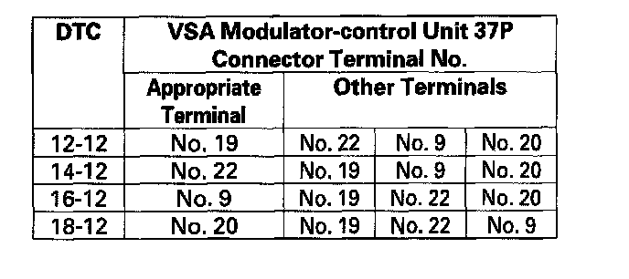
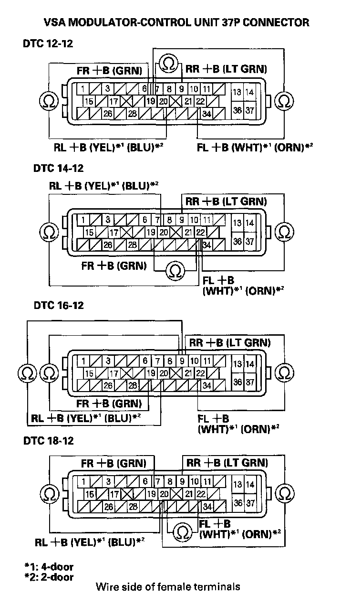

DTC 18-12
DTC 12-12: Right-front Wheel Sensor Short to the Other Sensor CircuitDTC 14-12: Left-front Wheel Sensor Short to the Other Sensor Circuit
DTC 16-12: Right-rear Wheel Sensor Short to the Other Sensor Circuit
DTC 18-12: Left-rear Wheel Sensor Short to the Other Sensor Circuit
1. Turn the ignition switch ON (II).
2. Clear the DTC with the HDS.
3. Test-drive the vehicle. Drive the vehicle at 13 mph (20 km/h) or more, and go a distance of 328 ft (100 m) or more.
NOTE: Drive the vehicle on the road, not on the lift.
4. Check for DTCs with the HDS.
Is DTC 12-12, 14-12, 16-12, and/or 18-12 indicated?
YES - Go to step 5.
NO - Intermittent failure, the system is OK at this time. Check for loose terminals between the wheel sensor 2P connector and the VSA modulator-control unit 37P connector. Refer to intermittent failures troubleshooting.
5. Turn the ignition switch OFF.
6. Disconnect VSA modulator-control unit 37P connector.
7. Check for continuity between the appropriate VSA modulator-control unit 37P connector wheel sensor +B terminals (see table).


Is there continuity?
YES - Repair short in the wires between the appropriate wheel sensor and the VSA modulator-control unit.
NO - Check for loose terminals in the VSA modulator-control unit 37P connector. If necessary, substitute a known-good VSA modulator-control unit, and retest.